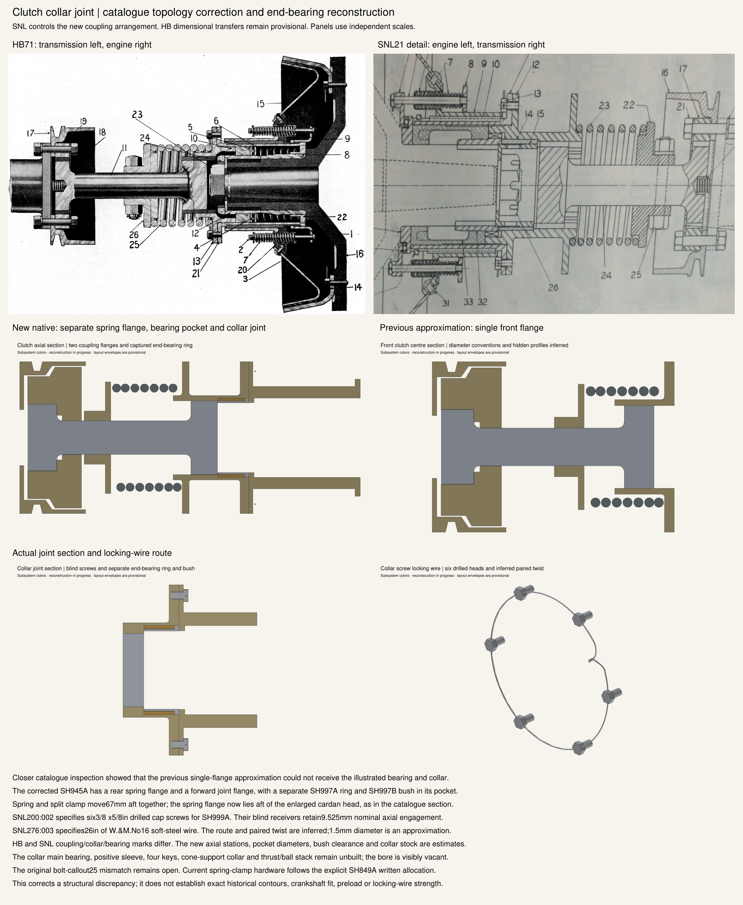

The closer catalogue section required a second coupling flange and a forward bearing pocket. The earlier approximation remains available beside the corrected native section. Independent scales; internal clutch construction continues.

Source hashes, crop coordinates and limitations